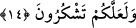

[134] Bu hadiste kalb ile melekût arasında perde olan sebeplere işâret vardır.
İnsanlar kalblerine göre üç sınıftır: Bir kısmı hayvanlar gibidir. “Kalbleri vardır,
anlamazlar.” (el-A‘raf, 7/179) âyeti buna işâret eder. Diğer bir kısmının bedeni
âdemoğlu, rûhu şeytan rûhudur. Üçüncü kısmı ise hiçbir gölgenin bulunmadığı günde
Allah’ın gölgesinde olanlardır. el-Hâlisa’da böyle geçmektedir.
Sa‘dî (k.s.) der ki:
Senin için başında göz ve kulak koymuşlar
Ağız söz yeri, gönül ise akıl yeridir
Ancak geri bilirsen inişi yokuştan
Bu kısa veya uzun diye söylemeyesin
Yâni, Allah Teâlâ âzâlardan her birini hikmet ile yaratmıştır. Onları ne için
yaratılmışsa onda kullanın.
14. İçinden taze et (balık) yemeniz ve takacağınız bir süs (eşyası) çıkarmanız için
denizi emrinize veren O’dur. Gemilerin denizde (suları) yara yara gittiklerini de
görürsün. (Bütün bunlar) onun lütfunu aramanız ve nîmetine şükretmeniz içindir.
“İçinden” el-Kevâşî’de belirtildiği üzere ister suyu tatlı ister suyu tuzlu denizden
olsun “taze et yemeniz” ‘Taze et’ ile balık kasdedilmiştir. Bir hayvan cinsi olduğu halde
ondan “et” diye bahsedilmesi, ondan faydalanmanın yeme ile sınırlı olduğuna işâret
içindir. Nitekim el-İrşâd’da böyle geçer. Yine gönlüme doğduğuna göre çekirge dışında
diğer hayvanlar gibi boğazlanmaya ihtiyacı olmadığını bildirmek için böyle
buyrulmuştur. Taze olarak yenmesine delâlet etmek üzere balığı “taze” olarak
vasfetmiştir. Çünkü kurutulmuş balığı yemek, doktorların da kesin olarak belirttiği gibi
oldukça zararlıdır. Yine burada içilemeyecek kadar sert, acı, kalın, tuzlu bir suda balığı
taze ve tatlı olarak yaratması Allah’ın sonsuz kudret sâhibi olduğuna delil vardır.
Balık etine de âyette “et” denmesinden dolayı İmam Mâlik ve Sevrî, ‘Bir kimse et
yememeye yemin ederse, balık yemekle yemininden dönmüş olur.’ görüşündedir.
Cevâben denilebilir ki: Yeminler örfe binâ edilir. Şüphesiz ki “et” mutlak olarak
kullanıldığında, bundan balık eti anlaşılmaz. Görmez misin ki, Allah Teâlâ kâfiri “dâbbe
(hayvan)” diye isimlendirerek şöyle buyurmuştur: “Allah katında, yerde yürüyen